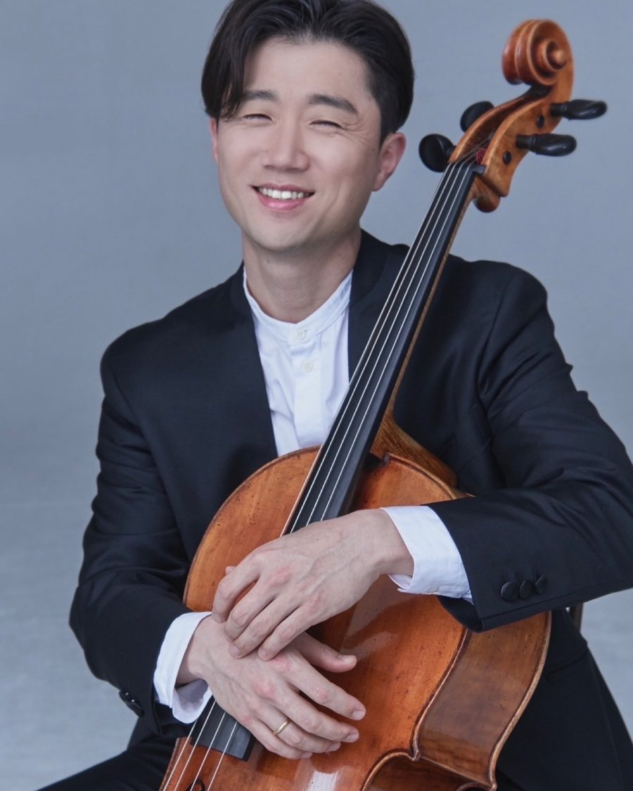

→ 단원 목록으로

첼로
오국환
단원첼로
주요 약력
- 독일 로스톡 국립음대 디플롬 졸업
- 독일 데트몰트 국립음대 석사·최고연주자과정 졸업
- 독일 함부르크 브람스 콘서바토리 지휘과 수료
- 현) 대구가톨릭대학교·경북예고·대구예술영재교육원 출강, 수성팝스오케스트라·마루한청소년오케스트라·군위중학교 ‘네오’ 오케스트라 지휘자
- CM심포니오케스트라·마루한필하모닉오케스트라 첼로 수석단원, 순수창작단체 ‘소리결’ 음악감독, SoundT 앙상블 단장
- 대구 비르투오조 챔버 단원, 솔리스트 첼로앙상블 경상, 앙상블 보아즈, 칸티쿰노붐미션콰이어 단원